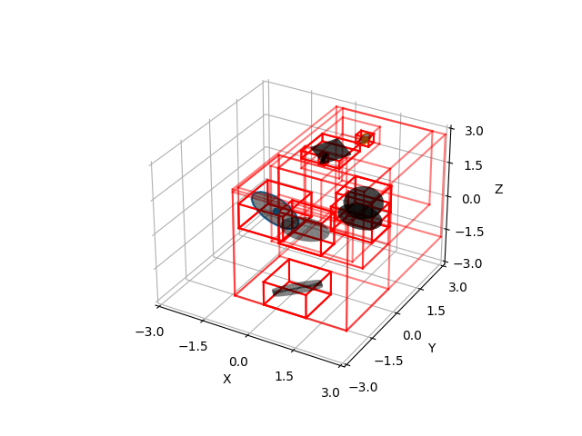

Note
Click here to download the full example code
AABB Tree¶
Plot AABB tree.
from distance3d.aabb_tree import AabbTree
print(__doc__)
import numpy as np
import pytransform3d.plot_utils as ppu
import matplotlib.pyplot as plt
from distance3d import containment, random, plotting
ax = ppu.make_3d_axis(3)
random_state = np.random.RandomState(0)
center, radius = random.rand_sphere(random_state)
mins, maxs = containment.sphere_aabb(center, radius)
ppu.plot_sphere(ax, radius, center, wireframe=False, alpha=0.5)
plotting.plot_aabb(ax, mins, maxs)
aabb1 = np.array([mins, maxs]).T
box2origin, size = random.rand_box(random_state)
mins, maxs = containment.box_aabb(box2origin, size)
ppu.plot_box(ax=ax, A2B=box2origin, size=size, wireframe=False, alpha=0.5)
plotting.plot_aabb(ax, mins, maxs)
aabb2 = np.array([mins, maxs]).T
cylinder2origin, radius, length = random.rand_cylinder(random_state)
mins, maxs = containment.cylinder_aabb(cylinder2origin, radius, length)
ppu.plot_cylinder(ax=ax, A2B=cylinder2origin, radius=radius, length=length, wireframe=False, alpha=0.5)
plotting.plot_aabb(ax, mins, maxs)
aabb3 = np.array([mins, maxs]).T
capsule2origin, radius, height = random.rand_capsule(random_state)
mins, maxs = containment.capsule_aabb(capsule2origin, radius, height)
ppu.plot_capsule(ax, capsule2origin, height, radius, wireframe=False, alpha=0.5)
plotting.plot_aabb(ax, mins, maxs)
aabb4 = np.array([mins, maxs]).T
ellipsoid2origin, radii = random.rand_ellipsoid(random_state)
mins, maxs = containment.ellipsoid_aabb(ellipsoid2origin, radii)
ppu.plot_ellipsoid(ax, radii, ellipsoid2origin, wireframe=False, alpha=0.5)
plotting.plot_aabb(ax, mins, maxs)
aabb5 = np.array([mins, maxs]).T
cone2origin, radius, height = random.rand_cone(random_state)
mins, maxs = containment.cone_aabb(cone2origin, radius, height)
ppu.plot_cone(ax, height, radius, cone2origin, wireframe=False, alpha=0.5)
plotting.plot_aabb(ax, mins, maxs)
aabb6 = np.array([mins, maxs]).T
center, radius, normal = random.rand_circle(random_state)
mins, maxs = containment.disk_aabb(center, radius, normal)
plotting.plot_circle(ax, center, radius, normal, surface_alpha=0.5, color="k")
plotting.plot_aabb(ax, mins, maxs)
aabb7 = np.array([mins, maxs]).T
center, axes, radii = random.rand_ellipse(random_state, center_scale=10.0, radii_scale=0.3)
mins, maxs = containment.ellipse_aabb(center, axes, radii)
plotting.plot_ellipse(ax, center, axes, radii, surface_alpha=0.5, color="k")
plotting.plot_aabb(ax, mins, maxs)
aabb8 = np.array([mins, maxs]).T
tree = AabbTree()
tree.insert_aabb(aabb1, "sphere")
tree.insert_aabb(aabb2, "box")
tree.insert_aabb(aabb3, "cylinder")
tree.insert_aabb(aabb4, "capsule")
tree.insert_aabb(aabb5, "ellipsoid")
tree.insert_aabb(aabb6, "cone")
tree.insert_aabb(aabb7, "disk")
tree.insert_aabb(aabb8, "ellipse")
plotting.plot_aabb_tree(ax, tree)
plt.show()
Total running time of the script: ( 0 minutes 0.688 seconds)